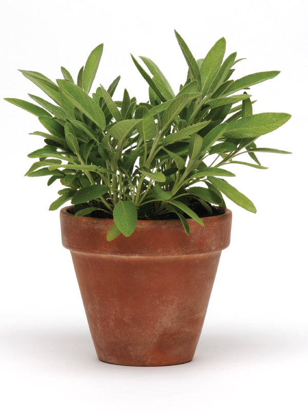

สมุนไพรต่างประเทศที่นิยมปลูกในไทย
โหระพาอิตาเลียน (Italian Basil)
ออริกาโน (Oregano)
เสจ (Sage)
อิตาเลียนพาร์สลีย์ (Parsley)

ลาเวนเดอร์ (Lavender)

ก่อนปลูกควรทำอะไรบ้าง?
1. ศึกษาข้อมูล:ก่อนที่จะปลูกสมุนไพรต่างประเทศ ควรศึกษาข้อมูลเกี่ยวกับชนิดสมุนไพรนั้นๆ เช่น ความต้องการแสงแดด ปริมาณน้ำที่ต้องการ การดูแลรักษา ความต้องการของดิน และอุณหภูมิที่เหมาะสม
2. เลือกที่ปลูก:พิจารณาพื้นที่ที่มีสภาพอากาศและสภาพดินที่เหมาะสมกับชนิดสมุนไพรนั้นๆ เช่น บางชนิดอาจต้องการแดดจัด บางชนิดอาจชอบร่มเงา บางชนิดอาจต้องการดินที่มีการระบายน้ำดี
3. ดูแลรดน้ำอย่างเหมาะสม:ไม่รดน้ำมากเกินไปหรือน้อยเกินไป ควรรดน้ำเฉพาะดิน ไม่รดน้ำที่ใบ หรือใบอาจเน่าได้
4. ใส่ปุ๋ยอย่างเหมาะสม:ควรใส่ปุ๋ยตามความต้องการของแต่ละชนิดสมุนไพร โดยใช้ปุ๋ยที่เหมาะสมและในปริมาณที่เหมาะสม
5. ป้องกันศัตรูและโรค:ควรดูแลรักษาอย่างสม่ำเสมอ เพื่อป้องกันศัตรูและโรคต่างๆ ที่อาจทำให้สมุนไพรได้รับความเสียหาย
6. เก็บเกี่ยวอย่างเหมาะสม:เมื่อสมุนไพรพร้อมเก็บเกี่ยว ควรเก็บเกี่ยวส่วนที่ต้องการใช้เท่านั้น เพื่อให้สมุนไพรสามารถเติบโตได้อย่างต่อเนื่อง
7. ดูแลในฤดูหนาว (ถ้าจำเป็น):หากสมุนไพรไม่ทนต่อสภาพอากาศหนาวเย็น อาจต้องดูแลเพิ่มเติม เช่น การนำเข้าบ้านหรือการห่อหุ้ม

สมุนไพรต่างประเทศ นั้นปลูกยาก เพราะต้องปลูกในสถานที่ที่มีอากาศหนาวเย็น และต้องการการดูแลเป็นพิเศษ แต่ความจริงแล้วเราสามารถปลูกสมุนไพรเหล่านี้ในเมืองไทยได้ เพราะวิธีปลูกและขยายพันธุ์ส่วนใหญ่จะคล้ายกันกับสมุนไพรไทยทั่วไป คือ สามารถขยายพันธุ์ได้ด้วยการเพาะเมล็ดและการปักชำ ส่วนการดูแลรักษาอาจแตกต่างกันบ้างตามลักษณะของพืชแต่ละชนิด
สมุนไพรต่างประเทศ ไม่ว่าจะใช้เป็น สมุนไพรรักษาโรค หรือจะนำมาประกอบอาหารก็ล้วนแล้วแต่มีประโยชน์ และมีอยู่มากมายใกล้ตัวมากกว่าที่เราคิด หลายชนิดถูกนำมาเป็นส่วนประกอบในเมนูโปรดของเรา หลายชนิดมีสรรพคุณทางยามากมายและหลากหลายไม่แพ้สมุนไพรไทย
สมุนไพรส่วนใหญ่จะเติบโตได้ดีในดินปลูกทั่วไปตราบใดที่ดินระบายน้ำได้ดี อย่างไรก็ตาม สมุนไพรบางชนิดมีถิ่นกำเนิดในแถบเมดิเตอร์เรเนียนและชอบดินที่มีกรวดและระบายน้ำได้ดี การระบายน้ำที่ดีเป็นสิ่งสำคัญมาก เนื่องจากรากของสมุนไพรพื้นเมืองแถบเมดิเตอร์เรเนียนมักจะเน่าเปื่อยในดินที่ชื้น
การดูแลสมุนไพรต่างประเทศคล้ายกับการดูแลสมุนไพรทั่วไป เน้นการรดน้ำให้พอเหมาะการให้แสงแดดที่เหมาะสม และการเก็บเกี่ยวอย่างสม่ำเสมอ การเลือกใช้กระถางที่เหมาะสมกับชนิดของสมุนไพร และการใส่ปุ๋ยเพื่อเสริมสร้างการเจริญเติบโต
ใช้ปรุงอาหาร:เพิ่มรสชาติและกลิ่นหอมให้กับอาหาร
ใช้ประดับอาหาร:เพิ่มความสวยงามให้กับอาหาร
ใช้ทำเครื่องดื่ม:เพิ่มรสชาติและกลิ่นหอมให้กับเครื่องดื่ม
ใช้ในสวน:เพิ่มความสวยงามให้กับสวน
ใช้ในด้านการแพทย์:บางชนิดมีคุณสมบัติทางยา
ชามิ้นท์ ชาลาเวนเดอร์

สมุนไพรต่างประเทศที่ใช้สำหรับปรุงอาหารต่างๆสามารถหาซื้อได้ตามsupermarketทั่วไป ซึ่งมีทั้งแบบเป็นต้นและแบบสำเร็จรูปที่มีการตากแห้งมาแล้วและแบบขวดพร้อมใช้งาน